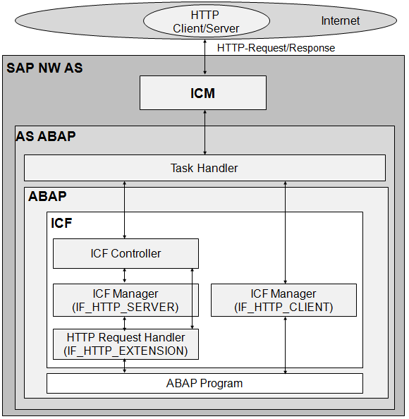

AS ABAP Release 754, ©Copyright 2019 SAP SE. All rights reserved.
ABAP Keyword Documentation → ABAP − Reference → Data Interfaces and Communication Interfaces →ICF - Internet Communication Framework
Internet Communication Framework (ICF) is a programming interface (API), based on interfaces and classes, used by ABAP programs to communicate with the Internet. ICF supports the Internet protocols HTTP, HTTPS, and SMTP. All communication between ABAP and the Internet based on these protocols takes place using ICF. ICF is a simplified technical foundation that can be used by more advanced programming interfaces. This means that ABAP programs do not usually access ICF directly and wrappers are used instead, such as Business Server Pages, Web Dynpro ABAP, Web Services ABAP, or on OData-based services like SAPUI5. Wrappers like these ensure that the conventions required for external communication are met, such as the model view controller approach (MVC) in Web Dynpro and SAPUI5 or Simple Object Access Protocol (SOAP) in Web services.
To communicate with the Internet using REST principles (Representational State Transfer), the interfaces and classes in the ABAP REST Library in the package SREST should be used, since they adapt ICF accordingly.
Note
Information about communications using the WebSocket protocol or TCP can be found under ABAP Push Channels.
ICF Overview
The following figure is a (highly simplified) schematic overview of communications between ABAP and the Internet using ICF. It uses HTTP communication as an example.

The actual communication of the AS ABAP with the Internet takes places through its Internet Communication Manager (ICM). The manager itself communicates with an AS ABAP work process, whose task handler controls ICF.
Communication can run in either direction, meaning that AS ABAP can be a server or a client. Within ICF, this aspect is implemented using different branches with their own interfaces and classes. ABAP programs can both respond to requests from the Internet and provide a service with data for further handling and itself query data from Internet. This is done by implementing the appropriate interfaces.
Notes
AS ABAP as an ICF Server
Each service that is reachable from the Internet and for which AS ABAP is used as an ICF server must be created as a node in the service tree in the service editor (transaction SICF). A service of this type is a transportable repository object that determines the properties of the service.
The initial node of the service tree stands for the AS ABAP Web address consisting of the host and the port. The position of the node in the tree determines the further URL path required to call a specific service. A URL can contain form fields after the actual address part, which are read by ICF.
Before a response can be made to a HTTP request sent to a service in the service tree in transaction SICF, at least one global class must be assigned to this service. This class must implement the interface IF_HTTP_EXTENSION and have access to the ICF infrastructure. When a request is sent to the service, ICF creates a HTTP request handler as an instance of this class. The implemented interface has only one method, HANDLE_REQUEST, whose input parameter SERVER is a reference to the server object represented by IF_HTTP_SERVER. The attributes and methods of the server object make it possible to query properties of the request, such as the content of the form fields in the URL and to pass data to the server in a suitable format, such as HTML or XML. The most important are the attributes REQUEST and RESPONSE, which refer to objects that implement the interfaces IF_HTTP_REQUEST or IF_HTTP_RESPONSE.
An HTTP/HTTPS request in an HTTP request handler is handled as ICF processing in a separate ICF session. Here, certain statements, like MESSAGE or BREAK-POINT, are handled differently than, for example, in dialog processing. External breakpoints can be set to debug programs during ICF processing.
Notes
Executable Examples
AS ABAP as an ICF Client
If the proxy setting for the HTTP client is configured appropriately in transaction SICF, ABAP programs can send requests to the Internet using ICF and receive responses. This is done using client objects from the class CL_HTTP_CLIENT, which implements the interface IF_HTTP_CLIENT. A client object can be created using a factory method from this class, which associates it with a Web address. Like a server object, the attributes REQUEST and RESPONSE reference objects that implement the interfaces IF_HTTP_REQUEST or IF_HTTP_RESPONSE and that can be used to send requests and receive responses.
Executable Example
ABAP as HTTP Client
ICF Security
The API of ICF enables virus scans to be run using the virus scan interface (VSI). The required virus scan profile for the scan can be selected.
If HTML pages can be created on an ICF server, it may be possible to prevent Cross Side Scripting. This is usually a task of frameworks based on ICF but it is also important not to forget this for directly created HTML pages.
Other security gaps also need to be blocked. For example, pages delivered from an ICF server should be protected against clickjacking attacks. A clickjacking attack integrates a page into the framework of an external Web page and tricks the reader into clicking on malicious links. This can be prevented in the HTTP request handler by using a method call
server->response->set_header_field( name = 'X-Frame-Options' value = '...' ).
, provided that the values "SAMEORIGIN" or "DENY" can be passed to value (server is a reference variable, which points to the server object).
More Information